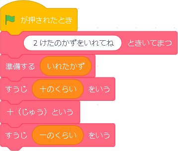

数を読ませよう


今回は、数に触れるために、数を猫さんに読ませよう！という単元です。数を扱うのは１年生の単元ですが、いきなり１年生からやるのは厳しいかな、、、と思い、２年生の算数とさせていただきました。この参考のプログラムをそのまま使います。上のプログラムが簡単バージョン、下が応用バージョンです。
基礎のプログラム |
|
|  |
並べ替えるのはした三つですね。 数字を読むときの規則を考えます。 二桁だと、 十の位の数字を読む➡十という➡一の位を言う 完成です！ 二桁の数字を言い切るまでの数字の読み方を分解し、 適切な並べ方を身に着けられるのではないかと思います。 ちなみに、10~19の時に、「いち・じゅう～」といわれたり、一の位が0のとき「れい」と読まれるのは、おかしくないです。 まずは読み方を分解できるようにするのがこのプログラムの目的だと思われます。次の応用で、もっとナチュラルに読めるようにしていきます。 そのために、今回どこが変なのかをよく観察して、 どういう数字だと変な呼び方なのかをわかっておきます。 |
応用のプログラム |
|
 |
左側は先ほど基礎で作ったものです。 そこに、下のブロックを追加することで、よりナチュラルに数字を読み上げます。 右側の完成したプログラムと見比べると、ピンクのブロックの並び自体は変わっていません。 重要なのは、条件で読むか読まないかを分けることです。 先ほどうまく読めなかった原因は下の通りです。
ただ、Scratchには［読まないで］という命令がないので、読んでほしくないものより、読んでほしいものを指定します。
これを＜もし♢なら＞ というブロックを使って命令します。 どこにつけるかというと、上の文で太くなっている分と同じ命令が書かれたブロックがあるので、そこにつけます。 これでナチュラルに読むようになりました！ |